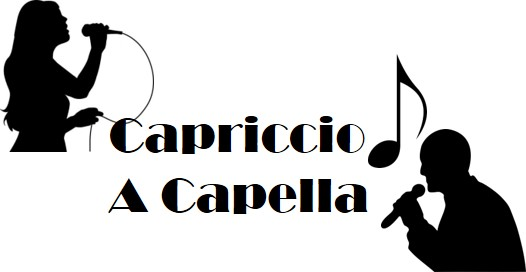

Capriccio A Capella
Monday Lunch | Rm 72
Capriccio: a virtuous piece that departs from the current norm. We are Capriccio A Capella (formerly known as Barbershop/Sweet Adelines Club), Lynbrook's only a capella group on campus. Similar to the groups on NBC's The Sing-Off, and Pitch Perfect, we sing all types of a capella music, from traditional Barbershop style, to pop music just like the various and distinguished a capella groups on college campuses across America. We sing at school concerts and around campus. No experience is necessary!
Officer Team: Co-Presidents: Pragna and Prapurna Upputuri, Vice-President: Shreya Munnangi